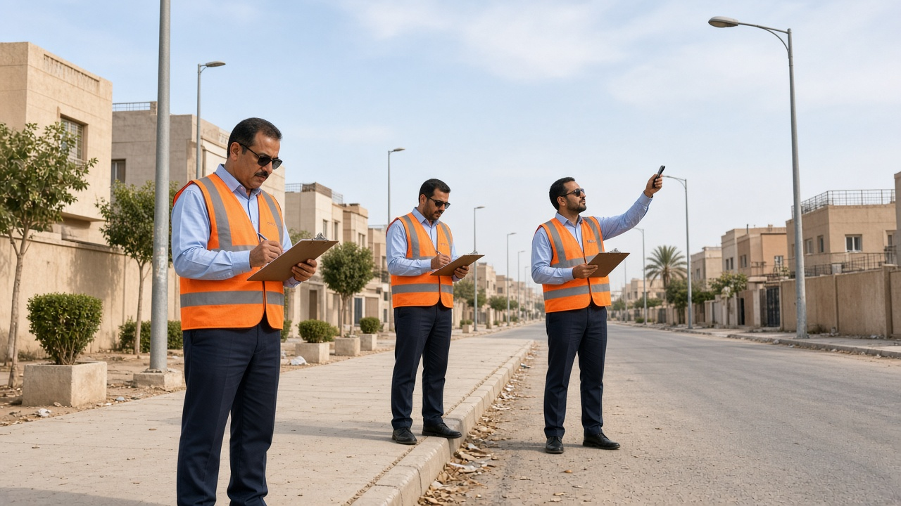

مشاريع تحتاج متابعة
تظهر هنا المشاريع المتجاوزة للموعد، أو المتوقفة، أو المتأخرة، أو التي تسير نسبة إنجازها أبطأ من الزمن المنقضي، إضافة إلى ما سُجّل عليه ملاحظة متابعة.
9 مشاريع ضمن التنبيه
-

مرصد الأداء المؤسسي
- الحالة مسجّلة متأخرة
- تجاوز الموعد المتوقع للإنجاز
- ملاحظة المتابعة: تأخر وصول بيانات بعض الإدارات عن الدورة الشهرية.
متأخر 38٪ حي الخريمي متأخر 228 يومًا المتوقع 31 مارس 2026 -

منصة البيانات المفتوحة
- الحالة مسجّلة متأخرة
- تجاوز الموعد المتوقع للإنجاز
- ملاحظة المتابعة: بانتظار اعتماد نموذج البيانات من الإدارات المالكة.
متأخر 34٪ حي الزبارة متأخر 198 يومًا المتوقع 30 أبريل 2026 -

شبكة الألياف لمباني الأمانة
- المشروع مصنّف ضمن ما يحتاج متابعة
- تجاوز الموعد المتوقع للإنجاز
- ملاحظة المتابعة: تأخر توريد معدات الربط في ثلاثة مواقع، ويحتاج العقد إلى قرار استكمال.
يحتاج متابعة 58٪ حي المصيف متأخر 137 يومًا المتوقع 30 يونيو 2026 -
مسار الابتكار البلدي
- المشروع متوقف ويحتاج قرار استئناف
- تجاوز الموعد المتوقع للإنجاز
- أولوية حرجة ونسبة الإنجاز دون النصف
- ملاحظة المتابعة: توقف المسار بانتظار اعتماد ميزانية التجارب.
متوقف 25٪ حي المصيف متأخر 107 يومًا المتوقع 30 يوليو 2026 -

شراكة تطوير الحدائق والمتنزهات
- المشروع مصنّف ضمن ما يحتاج متابعة
- تجاوز الموعد المتوقع للإنجاز
- ملاحظة المتابعة: إعادة التفاوض على نطاق أعمال الحدائق قبل إعادة الطرح.
يحتاج متابعة 44٪ حي الوسيطاء متأخر 105 يومًا المتوقع 1 أغسطس 2026 -
مركز عمليات الأمن السيبراني
- المشروع مصنّف ضمن ما يحتاج متابعة
- تجاوز الموعد المتوقع للإنجاز
- أولوية حرجة ونسبة الإنجاز دون النصف
- ملاحظة المتابعة: نقص في الكوادر المتخصصة للتشغيل على مدار الساعة.
يحتاج متابعة 41٪ حي عقدة متأخر 45 يومًا المتوقع 30 سبتمبر 2026 -

جودة الخدمات الميدانية
- المشروع مصنّف ضمن ما يحتاج متابعة
- تجاوز الموعد المتوقع للإنجاز
- ملاحظة المتابعة: ملاحظات جودة متكررة في ثلاثة قطاعات ميدانية لم يُغلق سببها.
يحتاج متابعة 47٪ حي الزبارة متأخر 44 يومًا المتوقع 1 أكتوبر 2026 -

أتمتة مسار الرخص التجارية
- نسبة الإنجاز أقل من الزمن المنقضي بفارق ملحوظ
- ملاحظة المتابعة: تأخر الربط مع منصة بلدي في خطوة الإصدار النهائي.
قيد التنفيذ 27٪ حي الشفا متبقٍ 31 يومًا المتوقع 15 ديسمبر 2026 -

جائزة التميز الداخلي
- نسبة الإنجاز أقل من الزمن المنقضي بفارق ملحوظ
- ملاحظة المتابعة: تأخر وصول ملفات المشاركة من الوكالات.
قيد التنفيذ 32٪ حي عقدة متبقٍ 36 يومًا المتوقع 20 ديسمبر 2026